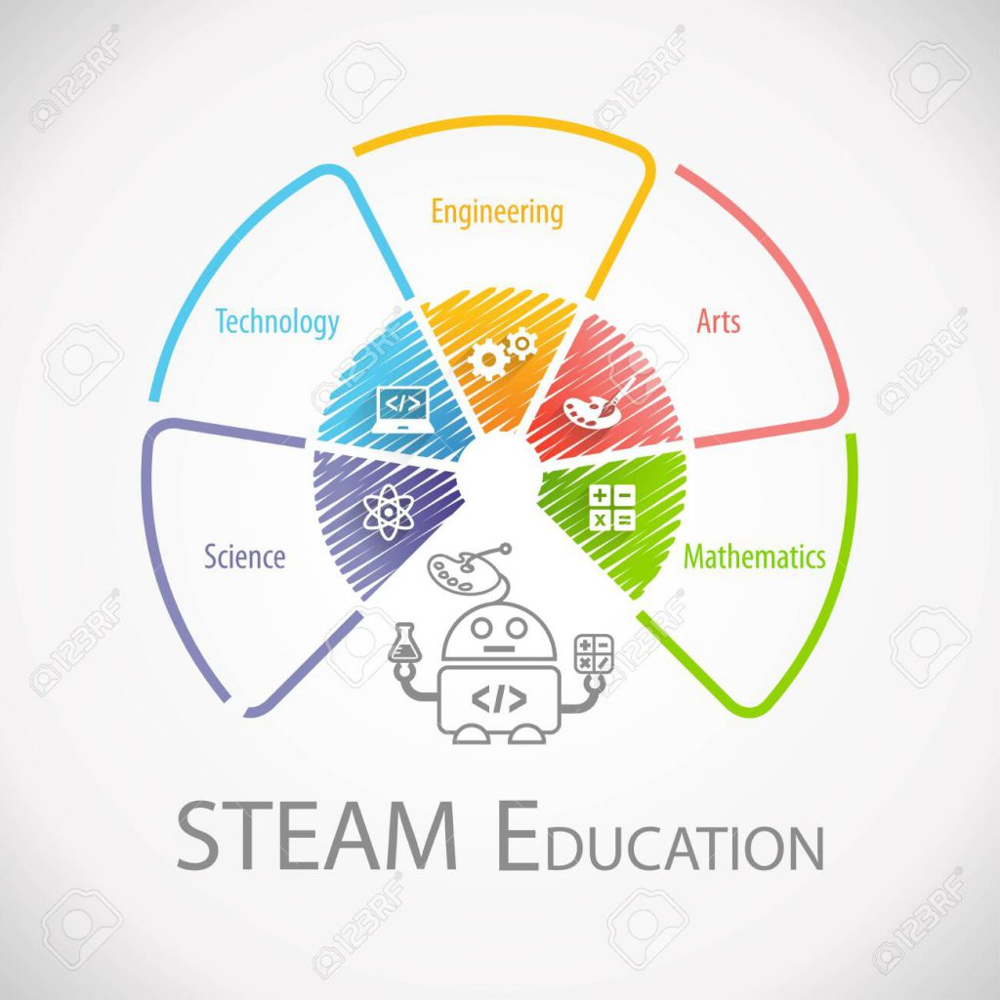

"The Critical Role of Integrated Curriculum in Early Childhood Education"
Introduction and Use of in Early Childhood Curriculum
For young children to be creative and develop critical thinking skills, an integrated curriculum that includes STEM(science, technology, engineering, mathematics), STEAM (adding art in STEM), STREAM(adding reading in STEAM), and STEMIE (adding innovation and entrepreneurship in STREAM) is essential (ACARA, 2017). This method promotes interdisciplinary learning, allowing kids to investigate ideas and work through issues by utilizing knowledge from several topic areas at once. It fosters invention, helps kids make connections across seemingly unrelated subjects, and develops their capacity for critical and creative thought. All of these things contribute to holistic development. By means of this comprehensive methodology, kids are enabled to develop into self-assured problems-solvers, imaginative thinkers, and inventive learners, establishing the groundwork for a lifetime of learning (AGDE, 2022). Developing these skills can lead to innovation and creative thinking. They have become the focus of international attention as governments have recognised the importance of STEM in creating jobs and incresing productivity, compeitiveness, and the economy (Office of the Chief Scientist, 2014)

Resources, Materials, and Digital Technologies
Traditional Resources and Materials
- Building Blocks and Construction Kits: Educational materials that let children's learn about geometry, engineering and design, such as Magna-Tiles or wooden blocks.
- Art Supplies:Paints, clay, markers, and other art supplies that include creativity into activities involving solving problems, such creating solutions or using art to illustrate scientific ideas.
- Storybooks and Informational Texts: Books that assist child's to explore scientific concepts, technological innovations, or engineering challenges, helping children connect literacy with STEM concepts.
Digital Technologies
- Robotics Kits: Interactive and entertaining toools that teach coding, engineering, and problem-solving, such as Bee-Bots, Dash & Dot, or LEGO WeDo.
- Digital Art and Design Tools:Applications and software that combine technology with artistic talent to let children to experiment with digital painting, 3D modeling, or design.
- Interactive Science Apps: These are online resources that give children a virtual environment in which to investigate STEM subjects. They mimic scientific investigations, engineering problems, or mathematical puzzles.
Learning Experiences by Age Group
0-2 Years:
- Sensory Exploration: Encouraging the investigation of physical attributes and preliminary scientific ideas through the provision of sensory play materials such as sand, water, or textured items is known as sensory exploration.
- Reason and Consequence Toys: Introduce basic toys, such push-and-pull toys, that show cause and effect in order to establish fundamental engineering and physics principles.
- Investigating Nature: Engaging in outdoor play that teaches fundamental environmental science and observational skills through activities like gathering leaves, watching insects, or experiencing various textures.
2-3 Years:
- Simple Construction Play: Simple construction play introduces early engineering principles and spatial awareness by having children create towers, bridges, or other buildings out of blocks or stacking toys.
- Art and Science Exploration: Using science and art together to investigate sustainability and creativity, for example, by painting with natural materials or making art out of recycled items.
- Interactive Storytelling: This involves reading tales with STEM themes and then participating in activities that are relevant to the story, such as helping a character build a bridge or learning about simple machines.
3-5 Years:
- Engineering Challenges: Providing tasks like building a boat that floats or a structure that can hold weight, encouraging problem- solving and experimentation.
- Exploring Coding: Introducing basic coding through apps or simple robotics, allowing children to create sequences, solve puzzles, and think logically.
- Art and Design Projects: Integrating technology with creativity by using digital tools to create art or design projects, fostering innovation and artistic expression.
6-8 Years:
- STEM Investigations: STEM studies include more involved scientific research, such as studying materials properties, carrying out easy experiments, or creating original creations.
- Integrated STEAM Projects: Integrated STEAM projects are those that combine science, engineering, and the arts. Examples include building a model city from scratch, developing eco-friendly artwork, or studying symmetry in the natural world.
- Entrepreneurial Projects: Fostering creativity and innovation, these projects teach children the fundamentals of entrepreneurship by having them develop, create, and "market" their ideas.
Pedagogical Practices and Teaching Strategies
- Promoting Interdisciplinary Learning: Encouraging youngsters to make connections between many academic areas will promote interdisciplinary learning, deepen knowledge of concepts, and boost creativity.
- Problem-Based Learning: Give children's the real-world issues to solve so they may use their knowledge creatively in a variety of contexts.
- Integrating Technology Thoughtfully: Use digital tools to supplement traditional education.For example, you can use code to create stories or combine robotics with art projects.
- Encouraging Hands-on Exploration: Givign children a lot of chances to get their hands dirty and do experiments, build things, make things, and learn by doing.
- Developing a Growth Mindset:Teach child to see obstacles as chances for learning, which will encourage perseverance, experimenting, and innovative problem-solving.
By combining these materials, learning experiences, and pedagogical practices, early childhood instructors can effectively employ the STEM, STEAM, STREAM, and STEMIE curriculum to foster creativity in young children, preparing them for future challenges and possibilities in a fast changing world (ACARA, 2017).